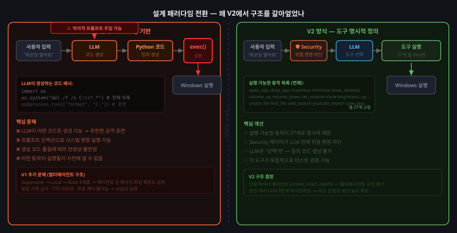

한국어 음성 명령으로 Windows PC를 제어하는 AI 에이전트
"말하면 PC가 움직인다"
[ 팀원 파트 ]
상용 시스템 분석
Siri · Bixby · Cortana · 클로바 등
[ 팀원 파트 ]
우리 시스템 vs 상용 시스템 비교표
상용 시스템이 존재하는 건 맞습니다. 하지만 아래 문제들을 해결하는 시스템은 없습니다.
| Siri / Bixby / Cortana | Pluiz v2 | |
|---|---|---|
| 대상 환경 | 모바일 중심, Windows 통합 제한적 | Windows PC 전용 · 깊은 시스템 통합 |
| 인터넷 의존 | 필수 — 오프라인 시 대부분 불가 | 캐시 + 로컬 STT → 오프라인 핵심 기능 가능 |
| Windows 제어 깊이 | 앱 실행 수준 창 제어 · 파일 생성 불가 |
창 포커스, 볼륨, 밝기, 파일 생성 등 27종 |
| 한국어 최적화 | 범용 다국어 처리 | PC 제어 명령 구조 특화 설계 |
| 커스터마이즈 | 불가 | 도구 추가 가능한 오픈 구조 |
| CPU | Intel / AMD x86-64 |
| RAM | 8GB 이상 권장 |
| 입력장치 | 마이크 (음성 입력) |
| OS | Windows 10 / 11 |
| 언어 | Python 3.10+ · JavaScript |
| 런타임 | Node.js 18+ / Electron 28 |
| 서버 | FastAPI + Uvicorn (포트 8765) |
| 통신 | HTTP REST · WebSocket |
| 설정 | pydantic-settings + .env |
| Gemini 2.0 Flash | 자연어 이해 · 도구 선택 판단 |
| LangGraph | ReAct 루프 실행 엔진 |
| faster-whisper | 로컬 음성 인식 모델 |
| edge-tts | 텍스트 → 음성 합성 (Microsoft) |
| YouTube Data API v3 | 영상 검색 · ID 조회 |
| Google STT | 온라인 음성 인식 (비공식 무료) |
| ctypes | Windows API 직접 호출 (user32, kernel32) |
| psutil | 프로세스 목록 · 실행 상태 확인 |
| winreg | 레지스트리 탐색 → 앱 경로 추출 |
| pycaw | Windows 볼륨 API 제어 |
| wmi | 화면 밝기 조회 · 변경 |
| pyautogui / pyperclip | 키보드 입력 · 클립보드 제어 |
| PyAV | webm → PCM 변환 (ffmpeg 바이너리 불필요) |
| Pillow · ddgs · SpeechRecognition | 스크린샷 · 웹 검색 · STT 래퍼 |
📦 외부 — 가져다 쓴 것
| 구성요소 | 우리 시스템에서 하는 역할 |
|---|---|
| Gemini 2.0 Flash | 사용자 의도 파악 · 어떤 도구를 쓸지 결정 |
| LangGraph create_react_agent | 판단→실행→관찰 루프 엔진 |
| faster-whisper (base 모델) | 오프라인 음성 → 텍스트 변환 |
| edge-tts (Microsoft) | 텍스트 → 한국어 음성 합성 |
| FastAPI · Electron · pydantic | 서버 · UI · 설정 프레임워크 |
| pyautogui · pyperclip · psutil | 키입력 · 클립보드 · 프로세스 유틸 |
🔧 우리가 설계 · 구현한 것
| 구현 항목 | 왜 직접 만들어야 했나 |
|---|---|
| 3단계 파이프라인 | Security→Cache→LLM 순서 · 각 레이어 로직 설계 |
| 보안 레이어 | 한국어 위험 명령 패턴 25개+ · LLM 전 차단 구조 |
| 커맨드 캐시 | Intent 추출 + 퍼지 매칭 2단계 알고리즘 · 시드 37개 |
| 도구 27개 전체 | Windows API 직접 제어 코드 (어떤 라이브러리도 제공 안 함) |
| 하이브리드 STT 전환 | 네트워크 감지 → 자동 전환 · 오인식 교정 딕셔너리 |
| Thread 자동 복구 | 오염 감지 → 체크포인트 삭제 → 재시도 (LangGraph 문서 외) |
| 결정론적 라우터 | 9개 패턴 → LLM 우회 직접 실행 |
"API 붙인 것 아니냐"는 질문에 대한 구체적 답변입니다. 라이브러리가 해결 못해 직접 짜야 했던 케이스들.
"왜 LLM에 모든 걸 맡기지 않는가" — 이것이 우리 아키텍처의 핵심 설계 결정입니다.
| 레이어 | 역할 | 왜 이 위치인가 | LLM 필요 | 인터넷 필요 |
|---|---|---|---|---|
| Security | 위험 명령 패턴 차단 | LLM이 입력을 보기 전에 결정론적으로 막아야 | ❌ | ❌ |
| Cache | 자주 쓰는 명령 직접 실행 | API 비용 절감 + 오프라인 핵심 기능 보장 | ❌ | ❌ |
| LLM | 복잡한 명령 이해 및 판단 | 캐시 미스인 경우만 호출 | ✅ | ✅ |
단순 기능 추가가 아닌 구조 자체의 실패를 두 번 겪고 V2에 도달했습니다.
| V0 · 초기 프로토타입 | V1 · 서버 + 멀티에이전트 | V2 · 현재 | |
|---|---|---|---|
| 실행 방식 | LLM 코드 생성 → exec() | LLM 코드 생성 → exec() | 사전 정의 도구 27개만 호출 |
| 보안 | JSON 키워드 필터 (우회 가능) | AST 분석 가드 (불완전) | 정규식 25개+ · LLM 전 차단 |
| 에이전트 구조 | 단일 컨트롤러 | Supervisor→Local→Base 3계층 응답 지연 · 루프 제어 불가 |
단일 ReAct 에이전트 |
| STT / TTS | 로컬 Whisper만 / gTTS | Google Cloud STT / TTS 미완성 | 하이브리드 STT / edge-tts |
| 메모리 | 없음 | 직전 1회만 | thread_id별 전체 히스토리 |

구조 재설계 이후에도 라이브러리로 해결 안 되는 문제들이 남아있었습니다.
* 이 외 한국어 키보드 입력 · pycaw asyncio · Gemini 빈 응답 등 총 16개 기술 도전 해결
"알고 있고, 왜 지금은 안 했는지도 안다"
| 문제 | 현재 상태 | 왜 지금 안 됐나 | 2학기 계획 |
|---|---|---|---|
| 웨이크워드 "소윤아" | Alt+Space 대체 | tiny 모델 오탐/미탐 심각. 별도 키워드 탐지 모델 필요 | 경량 키워드 탐지 모델 도입 |
| 실행 결과 검증 | 미구현 | 도구 27개 전부 반환값 파싱 레이어 추가 필요. 대규모 수정 | 검증 레이어 별도 구현 |
| 병렬 명령 실행 | 미구현 | create_react_agent 폐기 + 커스텀 그래프 재설계 수준 | Plan-and-Execute 구조 |
| 캐시 퍼지 매칭 | 0.80 절충값 | 한국어 구어체 변형 다양성 → 문자열 유사도 한계 | 임베딩 기반 시맨틱 매칭 |
✅ 완료 — 1학기 목표 전체 달성
| 3단계 파이프라인 | Security(패턴 25개+) → Cache(시드 37개, 퍼지 0.80) → LangGraph ReAct |
| 도구 27개 | 앱×5 · 시스템×10 · 파일×5 · 웹×5 · 키보드×2 · 캘린더×1 |
| 하이브리드 STT | Google(온라인) + Whisper(오프라인) 자동 전환 · 10초 TTL 캐시 |
| TTS | edge-tts → MP3 → base64 · 음성+텍스트 입력 모두 지원 |
| Electron UI | idle pill ↔ active view · always-on-top · API 핫스왑 |
| Thread 자동 복구 | 오염 감지 → MemorySaver 직접 삭제 → 새 thread_id 재시도 |
| 결정론적 라우터 | 9개 패턴 → LLM 우회 직접 실행 (속도 + API 비용 절감) |
| 자동화 테스트 | 25 / 25 통과 · 전 엔드포인트 · 주요 시나리오 커버 |
⏸ 알고 보류한 것
"Windows 위에서 동작하는 이식 가능한 개인 적응형 에이전트"
[ 팀원 파트 ]
데모 영상
일반 실행 · 보안 · 캐싱 성능 · 예외 처리